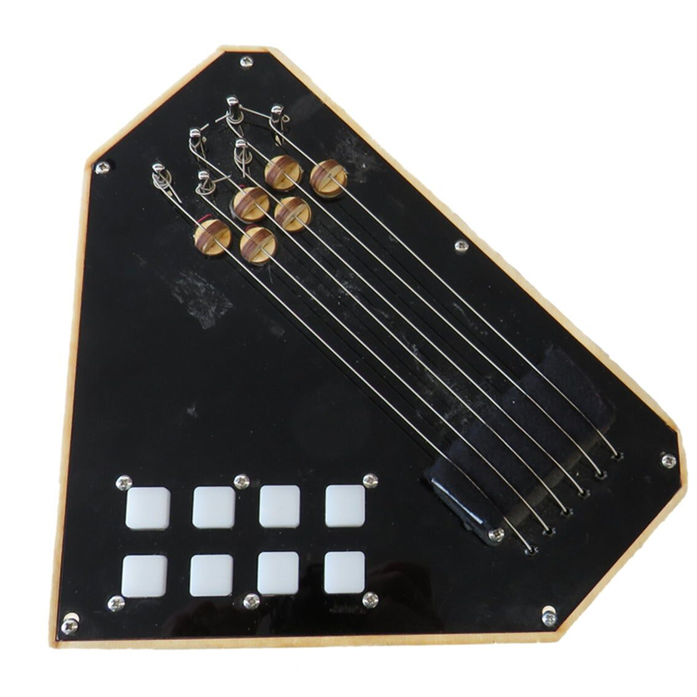
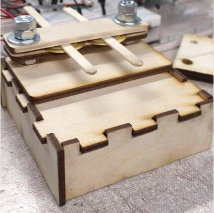
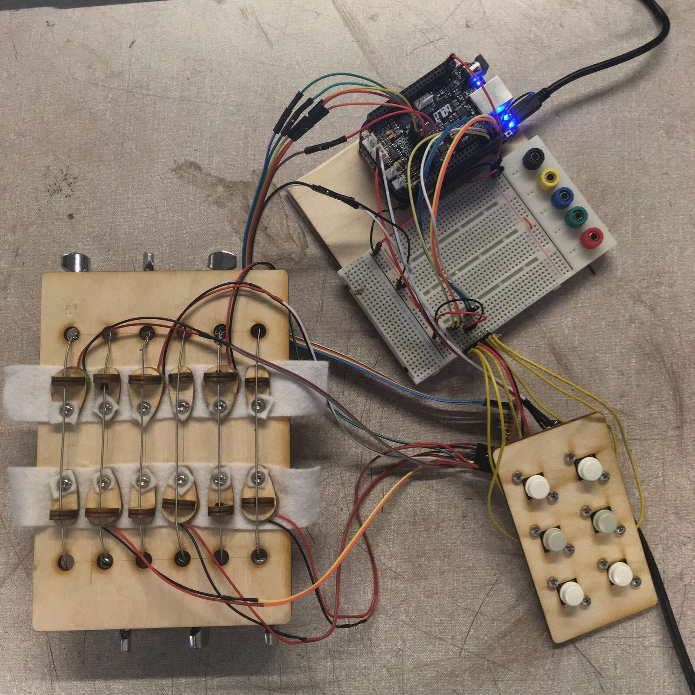
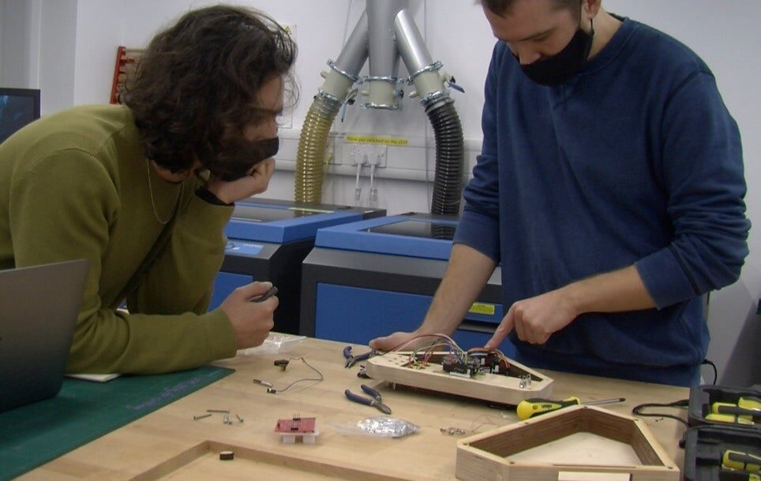

DMI Apprenticeship: Sharing and Replicating Musical Artefacts
Abstract
The nature of digital musical instruments (DMIs), often bespoke artefacts devised by single or small groups of technologists, requires thought about how they are shared and archived so that others can replicate or adapt designs. The ability for replication contributes to an instrument’s longevity and creates opportunities for both DMI designers and researchers. Research papers often omit necessary knowledge for replicating research artefacts, but we argue that mitigating this situation is not just about including design materials and documentation. Our way of approaching this issue is by drawing on an age-old method as a way of disseminating knowledge, the apprenticeship. We propose the DMI apprenticeship as a way of exploring the procedural obstacles of replicating DMIs, while highlighting for both apprentice and designer the elements of knowledge that are a challenge to communicate in conventional documentation. Our own engagement with the DMI apprenticeship led to successfully replicating an instrument, Strummi. Framing this process as an apprenticeship highlighted the non-obvious areas of the documentation and manufacturing process that are crucial in the successful replication of a DMI.
Author Keywords
DMIs, sharing, longevity, replicability, apprenticeship
CCS Concepts
•Applied computing → Sound and music computing; •Information systems → Collaborative and social computing systems and tools; •Human-centered computing → HCI theory, concepts and models;
Introduction
The nature of digital musical instruments (DMIs), often bespoke artefacts devised by single or small groups of technologists, requires thought about how they are shared and archived so that others can replicate or adapt designs. The ability for replication contributes to an instrument’s longevity and creates opportunities for both DMI designers and researchers. Designers are then able to be inspired by and repurpose parts of the design of shared DMIs, while researchers are able to replicate the scientific studies that employ DMIs if those instruments can also be replicated.
In NIME, and HCI at large, there are facets of knowledge that are omitted from research papers. This often includes the materials and documentation necessary for replicating research artefacts. However, we argue in this paper that it is not enough to provide design materials and documentation to be able to replicate a physical artefact, that there are types of knowledge also omitted from these materials. In response, we draw on an age-old method as a way of disseminating knowledge, the apprenticeship. We propose the DMI apprenticeship as a way of exploring the procedural obstacles to replicating DMIs, while highlighting the elements of knowledge that are difficult to communicate in conventional documentation.
We are motivated to provide a pathway for designers and makers to document their designs in a way that others can build upon and improve. At the same time, we raise the issue of communicating tacit knowledge and expertise that DMI designers may take for granted, and which tend to be omitted from publications and instrument documentation. In doing this, we hope to promote the longevity of instruments created by our community and contribute to the dissemination of instrument-making knowledge. While some instruments may benefit from the mystique of existing as the result of a unique set of decisions, replicability is a common enough concern for DMI practitioners who see the benefit of having open designs.
To explore these aspects, we have embarked on a method we call DMI apprenticeship, which consists of having an apprentice replicate a DMI design with direct instruction from its designers. In addition, we have reflected on the sharing and replicating process from the viewpoints of the designers and apprentice. By apprentice, we mean somebody with a skillset suitable for DMI design but without specific knowledge about the instrument at hand. This person need not be a master craftsperson, as we are not seeking a peer review of the design for its improvement. Although there is value in the training relationship of this exercise, for the purposes of this paper, we are more interested in the replication aspect of the apprenticeship than the directional transfer of knowledge. The DMI apprenticeship serves as a way of uncovering every detail of the instrument build process, to jointly put together a set of documentation for the DMI.
Some questions we are concerned with and which are explored in this paper are: What are the procedural obstacles of having someone other than the designer(s) replicate a DMI? What should the roles of designer and apprentice in co-creating documentation be? What do the inefficiencies of replicating a DMI tell us about the nature of the instrument?
We propose that this paper, and the DMI apprenticeship method outlined in it, will be useful for DMI researchers concerned with the implications of reproducible science involving DMIs, designers and makers interested in promoting the longevity of their instruments, those in the NIME community looking for richer ways of developing an instrument making practice, and organisations that want to share and document the output of instruments from their research and development programmes.
In the next section, we draw on related work to provide the context for why we care about DMI longevity, sharing, replication, and the relevance of craft knowledge for digital lutherie. We will then describe the instrument we replicated and documented, Strummi, including an overview of the research which has been conducted with it. Following that, we will outline the method we followed and which we propose as the DMI apprenticeship. Next, we provide first-person reflections on the process of sharing and replication from the viewpoints of the designers and apprentice. In addition, we discuss some of the salient points that emerged from our reflections and review the reasons why we recommend the DMI apprenticeship as a method for others to adopt. Finally, we summarise our contributions and offer some conclusions.
Related Work
There is a prevalent feeling, especially in the NIME community, that DMIs do not reach longevity and are often abandoned soon after completion [1][2]. Also, it has been recognised that there are challenges to maintaining, sharing and documenting existing DMIs [3][4]. Some of these challenges are not exclusive to DMIs, as the documentation of hardware-software codependencies applies to a wide range of projects.
In 2017, Morreale and McPherson [1] presented the results of a survey that investigated the difficulties of DMIs establishing themselves after creation and elaborated on the factors that influence the successes and failures of previous DMIs (presented at NIME 2010-14). The study showed that very few DMIs are performed in public and are often limited to one user, who tends to be the designer. Furthermore, it found that almost half of DMIs were not at that time ready for performance, with two thirds of those requiring substantial work to be ready. Marquez-Borbon and Martinez-Avila [2] related this lack of performance development of DMIs with community building and learnability of instruments. Their paper calls for the need of repertoire and pedagogical strategies as well as following a Community of Practice model in order to address the longevity of instruments.
One way of promoting the longevity of an instrument is by sharing it, as this can mean that several people can maintain the project by working on it asynchronously and that it can be replicated throughout the world, opening it up to different contexts and cultures, through the development of performances by musicians worldwide. However, the process of sharing a DMI is not as straightforward as a software project.
Calegario et al. [4] present a detailed account of the level of information that should be covered by a DMI's documentation and discuss the challenges of sharing DMIs. They state that a number of aspects including mechanical structure, electronics, programming, mapping and sound design should be addressed in a DMI's documentation, and that this should consolidate project assets, working prototypes, general notes and audiovisual records. They describe the documentation process as "an empathy exercise, since the design team must put themselves into the maker's position, considering their possible lack of specific skills, mistakes, misinterpretations". The authors go on to propose future work in developing an Open Source Hardware certification for DMIs.
In 2016, a NIME workshop [5] was held to explore the creation of a community database of DMIs (NIMEhub) as a way of expanding the reproducible research practices of NIME. The objective was to harness internet resources to enable instrument components to be more rapidly designed, manufactured, and evaluated, by sharing their designs across the world. The workshop identified the lack of comprehensive documentation for instrument designs emerging from NIME and non-affiliated makers and artists. This leads to the duplication of effort for designers working on similar challenges, as well as to a hindrance of instrument longevity. Some of the benefits of NIMEhub would be to provide NIME designers with an assortment of designs to learn from and be inspired by, enable the modularity of designs, facilitate collaboration, allowing older designs to be updated with newer technologies, etc.
While certainly not specific to NIME or DMIs, there is a variety of communities and online platforms that support the sharing and archiving of physical artefacts, such as Hackster.io, Thingiverse or Hackaday.io, and popular software repositories such as GitHub or GitLab are often used to host digital design files as well as code. Also, platforms like Instructables host a community around online step-by-step tutorials. All of these platforms have become an integral part of the open-source model of software development. How are these resources used by the HCI community?
In [6], Echtler and Häußler recognise a replication crisis within HCI, and attribute this to a lack of engagement with the open-source model of software development. They argue that sharing data and source code should be an integral part of publishing papers, thereby adopting a more open stance.
However, sharing physical artefacts and how they are made is not as straightforward as sharing code. Unlike software, physical objects need to be specified through 2D or 3D drawings, and, as discussed in this paper, there is an element of tacit knowledge implicit in the building of artefacts. This creates obstacles in the open sourcing of hardware products. To address this issue, Bonvoisin et al. [7] ask themselves what the ‘source’ of open source hardware is, i.e. what project materials must be shared for an artefact to become open source. To explore this question, they analysed the documentation of a variety of hardware products and found a wide range of sharing practices, from CAD files to the publication of comprehensive documentation.
An aspect of physical artefact replication that we want to explore in this paper relates to the skills needed to reproduce a physical object. Someone replicating a physical artefact not only needs documentation, tools and infrastructure, but must learn the ‘craft’ relating to that artefact. Torrey et al. argue that craft “experts’ skills are deeply embedded in their physical movements and in their history of interaction with materials, making this knowledge difficult to express” [8](p.1371). New vocabulary is easier to learn when both master1 and apprentice are present and can point to certain features of an artefact [8]. Knowledge is acquired by observing a master craftsperson, developing vocabulary to refer to the artefact and mediate feedback, and by building up continued experience with techniques and materials.
Gamble [9] traces back the evolution of the apprenticeship, arguing that there is still value in it, even though it has become an anachronism. Despite the changes in the content and form of apprenticeships, craft knowledge still requires that it is passed on through a ‘modelling’ relationship between master and apprentice. This is due to the tacit nature of craft knowledge.
The Internet offers many avenues for a craftsperson to share their knowledge and for craft enthusiasts to learn skills, communicate with others for advice and feedback, and even make their crafts available for sale. However, it is unclear to what extent craft/tacit knowledge can really be transmitted through online means [10].
In a study on How-To pages, Torrey et al. [11] identify that communicating how something is done is a non-trivial task, especially when referring to manipulating physical objects. When studying computer and electronics hobbyists, they found that they used technologies such as video and 3D modelling software to communicate process knowledge. This makes sense due to the challenge of documenting procedural knowledge in text-based form. Furthermore, in the activities of these hobbyists, they found that knowledge retrieval and creation were largely mediated by the How-Tos, whereas exchange happened on the side of documentation.
Strummi
Strummi (Figure 1) is a guitar-inspired DMI which uses the acoustic waveform generated from plucking dampened lengths of guitar string to excite a Karplus-Strong algorithm running on the Bela platform [12]. It has six physical strings, each of which excite a separate iteration of the algorithm (or 'virtual string'). By tuning the virtual strings to the notes of a typical guitar chord voicing, the strings can be strummed or plucked in a way which generates a strikingly realistic approximation of an acoustic string instrument, due to the preservation of the acoustic signal produced by the physical strings. This is a technique that has been used in other similar instruments such as the Kalichord Strum2, BladeAxe [13] and VASPBI [14]. Different chord voicings can be selected using embedded push-buttons, resulting in a functionality similar to that of an Autoharp or Omnichord.


Second iteration of Strummi, whose design was used for the DMI apprenticeship process
The design of Strummi originally came about through experimenting with methods of preserving the nuances of plucked string performances in DMIs. With no specific research questions in mind, the second and third authors spent some time iterating over designs based on acoustic excitation of the Karplus-Strong algorithm [15]. These early prototypes began as thumb-piano like instruments with wooden tines clamped over piezo sensors (Figure 2), with the output of the sensors used as the excitation for the virtual strings. We then began exploring ways of incorporating real guitar strings into the physical design in order to maintain some familiar plucking and strumming techniques, resulting in several iterations based on this idea (Figure 3).


Initial prototype exploring methods of acoustic excitation of a Karplus-Strong algorithm with pluck-type gestures


Early prototype made for exploring plucked string interaction
The second and third authors saw potential in these early prototypes to support our research interests: the nature of touch and control intimacy in DMIs, and the role of interaction technique and cultural form in establishing an instrument's identity. These research goals lead to the first stable designs of Strummi, which are presented in [16] and [17]. The materials and aesthetic qualities of the instrument were informed by our research goal of creating different versions of the instrument with more-or-less "guitar-like" qualities. A follow-up study was concerned with Strummi's potential as an Accessible Digital Musical Instrument (ADMI), and resulted in a second iteration of various Strummi designs. This second iteration saw some of the usability issues of the original design resolved, as well as a maturation of our ideas around the Strummi as a research product, which are detailed in [18]. The Strummi continues to be used in ADMI studies, some of which are presented in [19] and [20].
Method
In this section, we will set out the different phases of the apprenticeship project. In this paper, the designers are the second and third authors, while the apprentice is the first author. All communications between designers and apprentice were recorded.
The preparation phase of the apprenticeship began with the designers putting together a project snapshot [4] consisting of a bill of materials, project assets including code and fabrication files, a working prototype and general notes. Then, the designers and apprentice held a teardown session (Figure 4) to disassemble the DMI, in order to confirm the bill of materials and demonstrate the assembly of the instrument. Finally, the apprentice ordered and gathered the materials for fabrication.


Apprentice and designer engage in the teardown of Strummi
The making phase consisted of three main activities. First, the building of the enclosure and strings was carried out, under guidance of the designers. Second, the electronics were put together. The custom PCB was assembled, along with the components for the buttons. Third, the code was implemented by importing the software on Bela. During these activities, and already from the preparation phase, the apprentice kept a craft log book to keep track of inefficiencies, mistakes and challenges to making the instrument.
The next phase involved looking back at the craft log book and putting together documentation for public use, which gives detail about constructing the instrument, including advice based on the knowledge acquired during the making phase. The documentation includes three levels: a story outlining what the instrument is and how it is being used, a recipe describing how to make the instrument step-by-step, and a repository hosting the necessary design files and code. The recipe was produced in three passes by the designers and apprentice, verifying that the steps were described in sufficient detail.
Once the instrument was replicated and the documentation completed, the designers and apprentice reflected on the process. These are inherently subjective accounts, partly based on the recordings and craft log book, and not a detached third-party analysis of the recorded data. Both reflections can be found in the next section.
Reflection
Designers’ Reflection
Handing over an instrument design to another person requires you to first and foremost commit to a final revision and to pause development. This was a tricky task in itself for us, given the varied forms that Strummi evolved through before this final form was reached.
Designing an instrument is a process of experimenting with different techniques of material, electronics and sound design. It is a process of reiterating through many prototypes to perfect small details of the design, while gradually covering up any traces of this experimentation. This happens in both the physical instrument and its code base. As an instrument design reaches its point of arrival, whatever that may be, the majority of the processes which brought about that particular design get hidden in the polish of the “designed” product.
In earlier prototypes, the signs of these processes of trial and error tend to be more visible in the artefact itself. When passing on an instrument design to a person who has not lived through the whole design process, there are many instances of decision making and design choices which can appear to lack the extensive reasoning that brought them about in the first place. During this apprenticeship process we tried our best to find ways to communicate some of the reasoning behind design decisions, where appropriate.
The fact this instrument was a joint effort in the first place made things easier, as we had already settled on loose naming conventions for the different modules which make up the instrument. These naming conventions developed from the necessity for us to talk through the designs as we were working and were further developed throughout the apprenticeship process and have been carried throughout the labelling of design files and commenting of code.
Repositories of design files and code were used as a means of keeping track of and sharing our design ideas. They were not meant to be instructive, so lacked in accompanying documentation, which made things tricky to piece together when working with the apprentice. Making custom designed PCBs available for easy order via a service such as OSH Park would also make this instrument design far more accessible for those without experience with PCB fab houses. Our process was definitely helped by being able to be in person and hands on with the apprentice. Disassembling the working prototype was a crucial step which is most likely not possible for most instrument recreations. Finding a digital alternative is important, whether video, photos or an exploded view digital model.
As an instrument which came together somewhat organically through experimentation and trial-and-error before being formalised as a research product, many of the decisions that led to the way that the Strummi is put together are non-obvious and under-documented. We noticed during the apprenticeship process that the "why" behind many design steps was just as important to communicate as the "what" and the "how". Things that were fairly obvious to us designers, as a result of the tacit understanding of the way all the constituent parts came together, were much less obvious to the apprentice. Decisions that may have been made verbally and informally several years ago were now under much closer scrutiny, and led us at several stages to ask ourselves "why did we do it that way?". Documenting and communicating the "why" behind a certain design step may not be such a crucial part of the process of building future versions, however communicating the intentions behind them as well as the process of carrying them out, may aid the longevity of the design through enabling maintenance and design remixing of the instrument.
Apprentice’s Reflection
At the onset of the project, replicating Strummi was an intimidating task, especially without comprehensive documentation for it. However, I counted on the designers’ expertise to help me learn to make it. This expertise included high-level theory about the instrument; the practical know-what, i.e. the necessary steps; and the know-how, i.e. tacit elements of knowledge about how to make the DMI.
While on some sessions, I was accompanied by the designers, others had to be held remotely. I found this had both advantages and disadvantages. While the know-what was mostly clear, I lacked the know-how to carry out some steps. This led to making mistakes, which cost hours of labour. However, it was positive to find these mistakes, which we saw as opportunities to adjust the design, or warn potential makers of the instrument of these challenging and problematic points. On the other hand, having the designers available to demonstrate, correct or supervise me felt supportive, but in some instances I did not learn how to take a step, since I was merely copying or observing the designers.
I encountered many hurdles along the way, but finding these has allowed us to highlight them to others, as well as leading to a better understanding of the design of the instrument. Something that may be common with other open-source projects is that the repository had not been properly maintained, which meant some of the design files and code needed for making the instrument were either missing or not up-to-date.
Another hurdle relates to the affordances of assembling parts. While the precise mistake that led to this learning point has been corrected in the latest version of Strummi, i.e. there was an error in the symmetry of the design files, we learned that parts should, whenever possible, only be able to fit in one way, the correct way.
The fact that laser-cut parts were numbered helped with their assembly and figuring out how to put them together correctly, as they could be physically put together in more than one way. This kind of annotation could be considered as the hardware counterpart to code comments. We recognised this could have been done more extensively, as I still needed the designers to specify the order in which some parts were to be assembled. As for code comments, I lacked an explanation for troubleshooting the button order, a step needed since the buttons were not wired how the code expected them. Again, this is something specific to Strummi, but any DMI should specify, in its code, any necessary steps to be taken for its correct functioning.
A step that went smoothly, despite not having the designers present, was assembling the components of the custom PCB. Many DMIs will have a custom circuitry. While one would typically need a list of components and values, as well as a diagram of the board design, I went off a picture of an assembled PCB (from the teardown) and had enough knowledge of the circuit to know which value components went in different places. The reason why this was straightforward is because replicating PCBs is a largely standardised process, which follows a ‘paint by numbers’ process when populating them with components in accordance to schematics.
Something I was interested in was how different parts of the instrument could be modularised and repurposed, to make a different version of the instrument, or a new instrument inspired by it. Although this was not straightaway clear when replicating the instrument, in the process of producing the step-by-step recipe in the documentation, we clearly divided steps in a way that one can understand how to extract parts of the design or modify others.
One of the most salient points of shared tacit knowledge was when the designer disassembled one of the strings and demonstrated how to achieve the optimal tension in the string. Achieving this requires that one plucks the string repeatedly while tightening it in order to get both a feel of the string and to make sure it is not producing an audible tone. While this is specific to string instruments, one should think about what elements of making their instrument require this aspect of ‘feeling the materials’.
Discussion
As we have seen, despite there being multiple papers published about Strummi, there are levels of knowledge related to it which have not been communicated. Arguably, this is true for a majority of instrument-related research papers. The reason is that, often, these papers focus on the knowledge that has come about from using these instruments and not on the instrument development itself. This is for a good reason, since other academics will be interested in what they can learn from a paper’s methodology or findings, and perhaps not so much in the specifics of how an instrument has been designed and constructed. Nonetheless, it is important for DMI designers that their instruments have longevity, and one aspect of this will be related to how the instrument is shared and documented. For this reason, some authors publish supplementary materials that include design files and documentation to replicate their instrument. However, as we have found by engaging with the DMI apprenticeship method, there are elements of the practical know-how of manufacturing a physical artefact that are not easily communicated through documentation.
By drawing on this age-old method for disseminating knowledge, we have engaged with the process of replication in a way that highlights the elements of tacit knowledge that exist in digital lutherie. In fact, this process not only uncovers tacit knowledge, e.g. how strings should be tightened to feel a certain way, but establishes a modelling relationship between the designers, who know what is an appropriate outcome for the instrument, and apprentice, who can help to identify the procedural obstacles of replicating the instrument due to their position of unknowing.
An apprenticeship is different to a peer review of the instrument because we are not seeking to actively improve the instrument but to produce an exact copy of it. Being an apprentice is also different to following a step-by-step tutorial, for example via the Instructables platform. The obvious difference is that as an apprentice, you have direct access to the designer’s expertise, whether that is high-level theory about the instrument, practical know-what of the steps and materials needed or practical know-how of how the materials should be manipulated. Another difference is that, as an apprentice, you are contributing to the process of making an artefact ready for mass consumption, as the artefact can be documented with the apprentice's contributions. In this light, a DMI apprenticeship can serve as a beneficial step between the one-off instrument and the publication of the instrument for others to replicate, which can happen through open-sourcing or a step-by-step tutorial. Online step-by-step tutorials work, as is evidenced by huge and vibrant communities where people successfully replicate others’ artefacts. However, we ask ourselves how people bridge the gaps in knowledge found in recipes.
An idea emerged, from our reflections, about what the ideal apprenticeship exercise is. We considered the DMI apprenticeship as a method towards making public documentation. Furthermore, we acknowledged how our process, through the inefficiencies of replication, taught us a lot about the instrument. Therefore, we describe the apprenticeship as a method for both developing an instrument making practice and for coming up with richer ways of communicating design information. We found that it would be positive to add a stage to our method, to have a pilot replicator use the documentation resulting from the apprenticeship, to find out whether they are able to replicate the instrument without the designers’ presence. They would report back on any gaps in either the description of the instrument, its recipe or repository. These gaps might be addressed by simple edits to the documentation but it could also emerge that what is missing is a modelling relationship with the designers, as in the apprenticeship.
The need for certain skills, tools and infrastructure as a pre-requirement for making a physical artefact is another important aspect of DMI replication. In our case, as part of the same university department, both designers and apprentice had access to the same tools and had similar experience using them. Furthermore, the apprentice had a design background. Perhaps this is where the DMI apprenticeship most differs from the abstract apprenticeship, i.e. the DMI apprentice already has the required skills but learns how to apply them to the replication of a specific instrument.
Our own engagement with the DMI apprenticeship led to successfully replicating an instrument, Strummi3, while showing an opportunity for revising the design. Framing this process as an apprenticeship highlighted the non-obvious areas of the documentation and manufacturing process that are crucial in the successful replication of DMIs. For this reason, we recommend the DMI apprenticeship to instrument designers who want to promote their instruments' longevity, as the method will be able to highlight important aspects to focus on when producing materials such as recipes or repositories, as well as elements of lutherie knowledge that are beyond documentation.
Conclusion
We set out to replicate an existing instrument by framing it as a DMI apprenticeship, so the designers of the DMI taught an apprentice how to make their instrument. This process, supported by a craft log book, served as a method for developing comprehensive documentation and promote the instrument’s longevity. In this process, we engaged with the different strata of knowledge involved in replicating physical artefacts and looked for the elements of knowledge that cannot be communicated in research publications or documentation.
We described and reflected on our process for replication from the viewpoints of designer and apprentice as a way of presenting how knowledge was exchanged, extracting what was learned about the instrument and discussing what learning points can be extrapolated to other projects.
Finally, we discussed the results, and made a recommendation for DMI designers to engage with the DMI apprenticeship process when producing documentation for their instruments. Our conclusion is that the DMI apprenticeship should be adopted by NIME, as it is a method which provides a richer way of developing an instrument making practice, while giving us a better understanding of our instruments.
Future work will look into other designers' approaches to replicating and documenting their instruments ‘in the wild’, and how they approach the challenge of disseminating the tacit knowledge involved in instrument making.
Compliance with Ethical Standards
This work is supported by the EPSRC and AHRC Centre for Doctoral Training in Media and Arts Technology (EP/L01632X/1) and by EPSRC grant EP/N005112/1. There are no observed conflicts of interest.
Footnotes
In the DMI apprenticeship method, we have opted for the term ‘designer’ instead of ‘master’.
↩- ↩
Once released, the finished documentation will be linked at http://instrumentslab.org/research/accessible-instruments.html
↩
Citations
- ↩Morreale, F., & McPherson, A. (2017). Design for Longevity: Ongoing Use of Instruments from NIME 2010-14. In Proceedings of the International Conference on New Interfaces for Musical Expression (pp. 192–197). Copenhagen, Denmark: Aalborg University Copenhagen. https://doi.org/10/ghfjtp
- ↩Marquez-Borbon, Adnan, & Martinez-Avila, Juan Pablo. (2018). The Problem of DMI Adoption and Longevity: Envisioning a NIME Performance Pedagogy. In T. M. Luke Dahl Douglas Bowman (Ed.), Proceedings of the International Conference on New Interfaces for Musical Expression (pp. 190–195). Blacksburg, Virginia, USA: Virginia Tech. https://doi.org/10/ghfjz9
- ↩Nieva, A., Wang, J., Malloch, J., & Wanderley, M. (2018). The T-Stick: Maintaining a 12 Year-Old Digital Musical Instrument. In T. M. Luke Dahl Douglas Bowman (Ed.), Proceedings of the International Conference on New Interfaces for Musical Expression (pp. 198–199). Blacksburg, Virginia, USA: Virginia Tech. https://doi.org/10/ghffck
- ↩Calegario, F., Tragtenberg, J., Wang, J., Franco, I., Meneses, E., & Wanderley, M. M. (2020). Open Source DMIs: Towards a Replication Certification for Online Shared Projects of Digital Musical Instruments. In C. Stephanidis, A. Marcus, E. Rosenzweig, P.-L. P. Rau, A. Moallem, & M. Rauterberg (Eds.), HCI International 2020 - Late Breaking Papers: User Experience Design and Case Studies (pp. 84–97). Cham: Springer International Publishing. https://doi.org/10/ghffch
- ↩McPherson, A. P., Berdahl, E., Lyons, M. J., Jensenius, A. R., Bukvic, I. I., & Knudsen, A. (2016). NIMEhub: Toward a Repository for Sharing and Archiving Instrument Designs. In Proceedings of the International Conference on New Interfaces For Musical Expression. Brisbane, Australia: Queensland Conservatorium Griffith University.
- ↩Echtler, F., & Häußler, M. (2018). Open Source, Open Science, and the Replication Crisis in HCI. In Extended Abstracts of the 2018 CHI Conference on Human Factors in Computing Systems (pp. 1–8). New York, NY, USA: Association for Computing Machinery. https://doi.org/10/ghrm7q
- ↩Bonvoisin, J., Mies, R., Boujut, J.-F., & Stark, R. (2017). What Is the “Source” of Open Source Hardware? Journal of Open Hardware, 1(1), 1–18. https://doi.org/10.5334/joh.7
- ↩Torrey, C., Churchill, E. F., & McDonald, D. W. (2009). Learning How: The Search for Craft Knowledge on the Internet. In Proceedings of the SIGCHI Conference on Human Factors in Computing Systems (pp. 1371–1380). New York, NY, USA: Association for Computing Machinery. https://doi.org/10/d7tjbv
- ↩Gamble, J. (2001). Modelling the Invisible: The Pedagogy of Craft Apprenticeship. Studies in Continuing Education, 23(2), 185–200. https://doi.org/10/cc9dbn
- ↩Panahi, S., Watson, J., & Partridge, H. (2013). Towards Tacit Knowledge Sharing over Social Web Tools. Journal of Knowledge Management, 17(3), 379–397. https://doi.org/10/f43mtb
- ↩Torrey, C., McDonald, D. W., Schilit, B. N., & Bly, S. (2007). How-To Pages: Informal Systems of Expertise Sharing. In L. J. Bannon, I. Wagner, C. Gutwin, R. H. R. Harper, & K. Schmidt (Eds.), ECSCW 2007: Proceedings of the 10th European Conference on Computer-Supported Cooperative Work (pp. 391–410). Limerick, Ireland: Springer, London. https://doi.org/10.1007/978-1-84800-031-5_21
- ↩McPherson, A., & Zappi, V. (2015). An Environment for Submillisecond-Latency Audio and Sensor Processing on BeagleBone Black. In Audio Engineering Society 138th Convention.
- ↩Michon, R., & Smith, J. O. (2014). A Hybrid Guitar Physical Model Controller : The BladeAxe. ICMC: International Computer Music Conference.
- ↩Stapleton, P., van Walstijn, M., & Mehes, S. (2018). Co-Tuning Virtual-Acoustic Performance Ecosystems: observations on the development of skill and style in the study of musician-instrument relationships. In Proceedings of the International Conference on New Interfaces for Musical Expression (pp. 311–314). https://doi.org/10.5281/zenodo.1302593
- ↩Karplus, K., & Strong, A. (1983). Digital Synthesis of Plucked String and Drum Timbres. Computer Music Journal, 7(2).
- ↩Jack, R. H., Harrison, J., Morreale, F., & McPherson, A. P. (2018). Democratising DMIs: The Relationship of Expertise and Control Intimacy. In New Interfaces for Musical Expression. Virginia, US.
- ↩Harrison, J., Jack, R. H., Morreale, F., & McPherson, A. P. (2018). When Is a Guitar Not a Guitar? Cultural Form, Input Modality and Expertise. In New Interfaces for Musical Expression.
- ↩Jack, R. H., Harrison, J., & McPherson, A. P. (2020). Digital Musical Instruments as Research Products. In New Interfaces for Musical Expression.
- ↩Harrison, J., Chamberlain, A., & McPherson, A. P. (2019). Accessible Instruments in the Wild: Engaging with a Community of Learning-Disabled Musicians. In CHI ’19 Extended Abstracts on Human Factors in Computing Systems. Glasgow, UK.
- ↩Harrison, J. (2020). Instruments and Access: the Role of Instruments in Music and Disability (PhD Thesis).